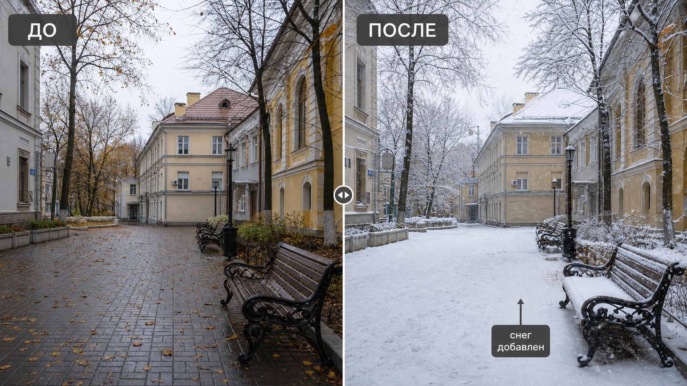

Промтзилла
Чтобы снег выглядел естественно, его нужно добавлять не только на землю, но и на крыши, ветки, скамейки, машины и дальний план.

Пошаговая инструкция
- 1Выбери фото улицы, двора, дома или пейзажа, где хорошо видны поверхности для снега.
- 2Загрузи изображение в инструмент редактирования фото онлайн.
- 3Укажи интенсивность: лёгкий снег, свежий покров или полноценная зимняя сцена.
- 4Попроси сохранить архитектуру, предметы и перспективу без деформаций.
- 5Проверь, чтобы снег лежал на горизонтальных поверхностях и не закрывал важные лица или текст.
Пример результата
На обложке показан сценарий до/после: исходное фото и результат, который можно получить через инструмент редактирования фото онлайн.
Промт
RU
Добавь на фотографию реалистичный снег и зимнюю атмосферу. Важно: — сохрани исходную композицию, здания, людей, предметы и перспективу; — добавь снег на землю, крыши, подоконники, ветки, скамейки, машины и дальний план; — сделай слой снега естественным по толщине и направлению; — добавь мягкий холодный свет и умеренную зимнюю дымку, если это подходит кадру; — не закрывай лица, важные детали и текст; — не превращай фото в мультяшную или фантазийную сцену. Результат должен выглядеть как настоящая зимняя фотография того же места.
EN
Add realistic snow and a winter atmosphere to the photo. Important: — preserve the original composition, buildings, people, objects, and perspective; — add snow to the ground, roofs, windowsills, branches, benches, cars, and background; — make the snow layer natural in thickness and direction; — add soft cold light and slight winter haze if it fits the image; — do not cover faces, important details, or text; — do not turn the photo into a cartoon or fantasy scene. The result should look like a real winter photograph of the same place.
Важно
Снег должен подчиняться геометрии кадра: лежать на поверхностях, цепляться за ветки и не появляться внутри помещений или под навесами без причины.
Теги